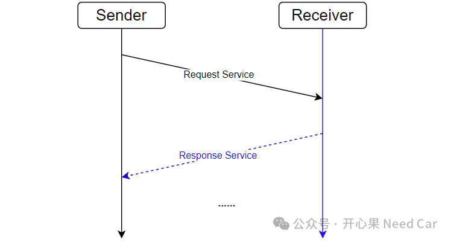

开心果 Need Car · 2024-08-07T06:37:00+08:00 · 微信原文
1、OEM提高刷写效率原因
假设：某个控制器使用高速经典CAN刷写，通信速率500Kbps，该控制需要刷写的软件大小为1MByte，那么，该控制器刷写用时多少呢？
按照我们的经验：1ms大概发送3帧经典CAN报文，按照经典CAN可以携带8 bytes有效负载计算，刷写1MByte软件大约用时：
Tpro = 1*1024*1024 / (3*8) ≈ 43690.67 ms ≈ 43.69s
如上计算，为了简化问题，按照每帧携带8 byte数据计算，实际刷写过程，无法做到每帧诊断报文都携带8 byte有效数据，而且，刷写过程是一个"乒乓交互"过程。所以，使用500Kbps的经典CAN刷写，实际刷写的1MByte软件用时＞43.69s。
诊断刷写交互过程，示意如下：

这么看，刷写一个软件也花不了多长时间呀？刷写效率慢在哪呢？确实，单看一个控制器的刷写或许并不觉得慢。这是因为我们站在单件控制器的角度看问题，如果我们转换一下角度，站在OEM角度，刷写整车所有控制器软件呢？
（一）基于OEM角度，看软件刷写
OEM作为整车生产商，在车辆下线前，需要将车辆所有的控制器都刷写对应的软件，如此，车辆才能正常、有序工作。我们进一步对问题假设：整车需要刷写的软件总计1GB大小。如果依然使用500Kbps的经典CAN刷写，1GB软件刷写用时 = 1*1024*1024*1024 / (3*8) ms ≈ 44739242.67ms ≈ 12.43 h。
如上结果是我们理想化的计算结果，考虑刷写流程的实际情况，实际刷写1GB数据，用时要＞12.43h。那么，实际能用多少时间呢？据查找的资料，宝马曾经测试过，刷写1GB数据，用时大约16小时。而随着汽车智能化的提升，软件的体量在不断的增加，整车需要刷写的软件数据量已经远不止1GB，所以，面对这样的场景，OEM怎能不急着解决这个瓶颈？
对于本文的问题，你有答案了吗？
往期精彩回顾